if (!file.exists("covid_processed.csv"))
download.file(
url = "https://raw.githubusercontent.com/dmcable/BIOSTAT620W26/main/data/covid/covid_processed.csv",
destfile = "covid_processed.csv",
method = "libcurl",
timeout = 60
)lab-04
Disclaimer: Generative AI was used to assist with templating and writing code in this assignment; however, this code was checked manually and edited by hand to ensure accuracy.
Source: OpenAI. (2026). ChatGPT (GPT-5.2 Thinking) [Large language model]. https://chatgpt.com/.
1. Read in the data
covid <- read.csv("covid_processed.csv")head(covid) X date mmwr_year mmwr_week state state_name pop region
1 1 2020-01-25 2020 4 AK Alaska 732441 10
2 2 2020-02-01 2020 5 AK Alaska 732441 10
3 3 2020-02-08 2020 6 AK Alaska 732441 10
4 4 2020-02-15 2020 7 AK Alaska 732441 10
5 5 2020-02-22 2020 8 AK Alaska 732441 10
6 6 2020-02-29 2020 9 AK Alaska 732441 10
region_name cases hosp booster series deaths
1 Pacific Northwest 0 0 0 0 0
2 Pacific Northwest 0 0 0 0 0
3 Pacific Northwest 0 0 0 0 0
4 Pacific Northwest 0 0 0 0 0
5 Pacific Northwest 0 0 0 0 0
6 Pacific Northwest 0 0 0 0 0dim(covid)[1] 5252 142. Prepare the data
normalize_pop <- function(cases, pop) {
cases / pop * 100000
}
covid$cases <- normalize_pop(covid$cases, covid$pop)
covid$hosp <- normalize_pop(covid$hosp, covid$pop)
covid$booster <- normalize_pop(covid$booster, covid$pop)
covid$series <- normalize_pop(covid$series, covid$pop)
covid$deaths <- normalize_pop(covid$deaths, covid$pop)library("lubridate")
Attaching package: 'lubridate'The following objects are masked from 'package:base':
date, intersect, setdiff, unioncovid$date <- ymd(covid$date)
head(covid$date)[1] "2020-01-25" "2020-02-01" "2020-02-08" "2020-02-15" "2020-02-22"
[6] "2020-02-29"Note: In the summary table of mean values by state below, the first population value was used for each state (i.e. the population for that state recorded in 2020).
library(dplyr)
Attaching package: 'dplyr'The following objects are masked from 'package:stats':
filter, lagThe following objects are masked from 'package:base':
intersect, setdiff, setequal, unioncovid_means <- covid %>%
group_by(state) %>%
summarise(
state_name = first(state_name),
pop = first(pop),
region_name = first(region_name),
across(c(cases, hosp, booster, series, deaths), ~mean(.x, na.rm = TRUE)),
.groups = "drop"
)
head(covid_means)# A tibble: 6 × 9
state state_name pop region_name cases hosp booster series deaths
<chr> <chr> <int> <chr> <dbl> <dbl> <dbl> <dbl> <dbl>
1 AK Alaska 732441 Pacific Northwest 206. 7.10 1672. 20996. 1.21
2 AL Alabama 5024803 Southeast 173. 14.8 952. 14759. 3.12
3 AR Arkansas 3012232 South Central 183. 13.4 1186. 16491. 2.95
4 AZ Arizona 7177986 Pacific 187. 12.8 1388. 19637. 3.02
5 CA California 39499738 Pacific 136. 7.99 1553. 21732. 1.93
6 CO Colorado 5784308 Mountain States 161. 9.87 1909. 21855. 1.85# Binary population categorical variable
covid_means$pop_binary <- ifelse(covid_means$pop >= 1e7, TRUE, FALSE)
head(covid_means)# A tibble: 6 × 10
state state_name pop region_name cases hosp booster series deaths
<chr> <chr> <int> <chr> <dbl> <dbl> <dbl> <dbl> <dbl>
1 AK Alaska 732441 Pacific Northwest 206. 7.10 1672. 20996. 1.21
2 AL Alabama 5024803 Southeast 173. 14.8 952. 14759. 3.12
3 AR Arkansas 3012232 South Central 183. 13.4 1186. 16491. 2.95
4 AZ Arizona 7177986 Pacific 187. 12.8 1388. 19637. 3.02
5 CA California 39499738 Pacific 136. 7.99 1553. 21732. 1.93
6 CO Colorado 5784308 Mountain States 161. 9.87 1909. 21855. 1.85
# ℹ 1 more variable: pop_binary <lgl>covid$region_name <- factor(covid$region_name)
covid_means$region_name <- factor(covid_means$region_name)
covid_means$region_name [1] Pacific Northwest Southeast South Central Pacific
[5] Pacific Mountain States New England Mid-Atlantic
[9] Mid-Atlantic Southeast Southeast Pacific
[13] Central Plains Pacific Northwest Midwest Midwest
[17] Central Plains Southeast South Central New England
[21] Mid-Atlantic New England Midwest Midwest
[25] Central Plains Southeast Mountain States Southeast
[29] Mountain States Central Plains New England New_York_Islands
[33] South Central Pacific New_York_Islands Midwest
[37] South Central Pacific Northwest Mid-Atlantic New_York_Islands
[41] New England Southeast Mountain States Southeast
[45] South Central Mountain States Mid-Atlantic New England
[49] Pacific Northwest Midwest Mid-Atlantic Mountain States
10 Levels: Central Plains Mid-Atlantic Midwest Mountain States ... Southeast3. Use geom_violin to examine the case rates and death rates by region
library("ggplot2")
covid_means %>%
ggplot(aes(x=1, y=cases, fill=region_name)) +
geom_violin() +
facet_wrap(~ region_name) +
ggtitle("Case Rates by Region of U.S.")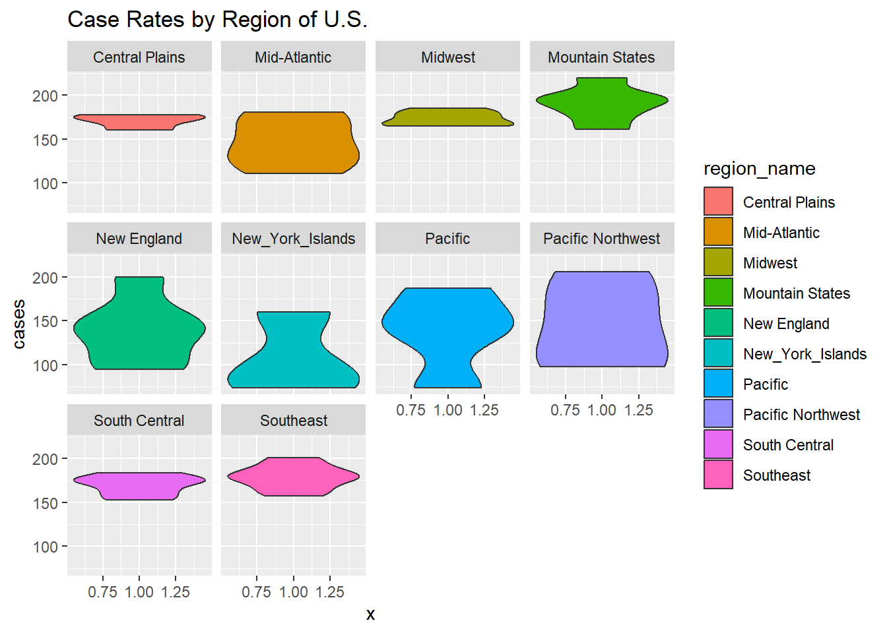
Based on this plot, we can see that the regions of the U.S. with the highest case rates are the Central Plains, Midwest, Mountain States, South Central, and Southeast regions, while the New York Islands tend to have the lowest case rates. The Pacific Northwest is the most broadly distributed region in terms of case rates, with rates spread roughly evenly from 100 to 200 cases.
library("ggplot2")
covid_means %>%
ggplot(aes(x=1, y=deaths, fill=region_name)) +
geom_violin() +
facet_wrap(~ region_name) +
ggtitle("Death Rates by Region of U.S.")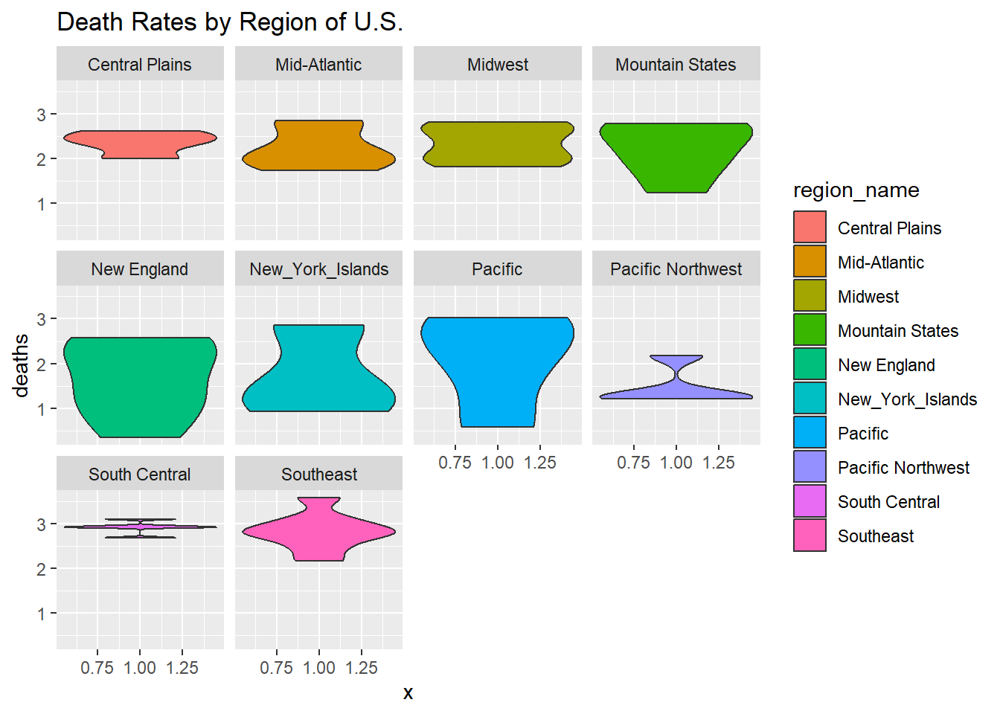
Based on this plot, we can see that the South Central and Southeast regions have the highest death rates, with an average of roughly 3 deaths, while Pacific Northwest has the lowest death rate, averaging roughly 1 death. The Central, Mid-Atlantic, Midwest, and Mountain States regions average roughly 2 to 3 deaths, while the New England, New York Islands, and Pacific regions are the most broadly distributed, with rates anywhere from 3 deaths to less than 1 death on average.
4. Examine the association between time and case rates by region
# Filter out first 2 weeks
start_date <- min(covid$date, na.rm = TRUE)
covid_filt <- covid %>%
filter(date >= start_date + days(14))
# Aggregate to monthly region means to make smoothing stable
covid_region_month <- covid_filt %>%
mutate(month = floor_date(date, unit = "month")) %>%
group_by(region_name, month) %>%
summarise(
cases = mean(cases, na.rm = TRUE),
.groups = "drop"
)
# Compare scatter plots with method = "lm" vs. the default smoother
p_lm <- ggplot(covid_region_month, aes(x = month, y = cases, color = region_name)) +
geom_point(alpha = 0.6) +
stat_smooth(method = "lm", se = FALSE) +
labs(
title = "Monthly COVID case rates over time by region (method = 'lm')",
x = "Month",
y = "Cases per week",
color = "Region"
)
p_default <- ggplot(covid_region_month, aes(x = month, y = cases, color = region_name)) +
geom_point(alpha = 0.6) +
stat_smooth(se = FALSE) +
labs(
title = "Monthly COVID case rates over time by region (default stat_smooth)",
x = "Month",
y = "Cases per week",
color = "Region"
)p_lm`geom_smooth()` using formula = 'y ~ x'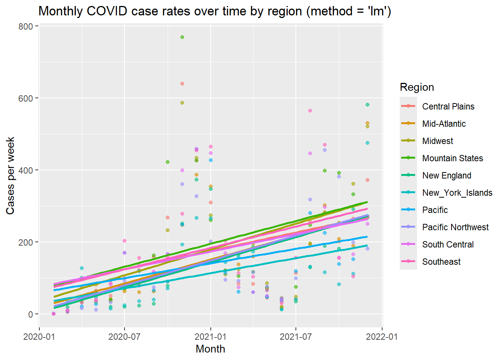
p_default`geom_smooth()` using method = 'loess' and formula = 'y ~ x'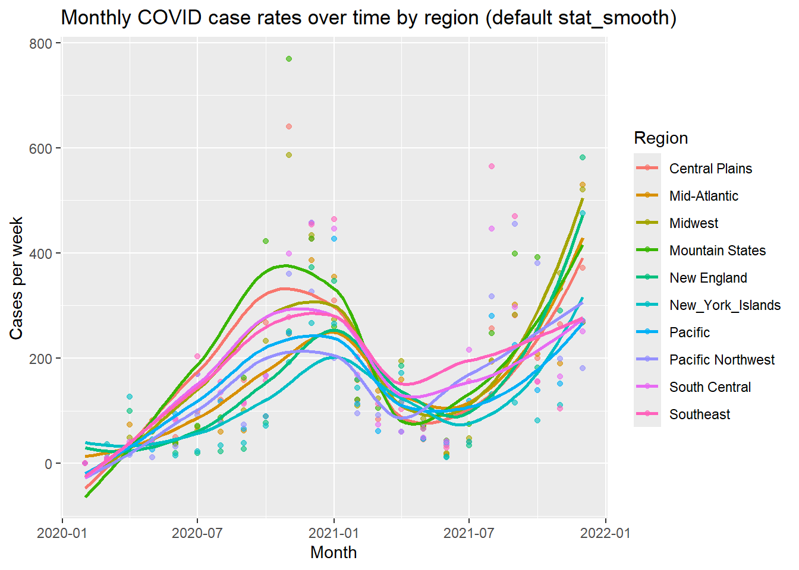
From comparing these plots, we can see that COVID rates spiked in most regions (the rates increased to above 400 cases per week) at the start of 2021 and 2022, but tended to remain low (less than 200 cases per week) throughout most of 2020 and 2021. Therefore, the standard smoothed model does a much better job at capturing the overall trend in COVID rates compared to the linear model using “method = lm”.
# --- Tune span for a smoother that fits better without being too noisy ---
# (span only applies to loess, so we set method = "loess" explicitly)
ggplot(covid_region_month, aes(x = month, y = cases, color = region_name)) +
geom_point(alpha = 0.6) +
stat_smooth(method = "loess", span = 0.25, se = FALSE) +
labs(
title = "Monthly COVID case rates over time by region (loess; span = 0.25)",
x = "Month",
y = "Cases per week",
color = "Region"
)`geom_smooth()` using formula = 'y ~ x'
ggplot(covid_region_month, aes(x = month, y = cases, color = region_name)) +
geom_point(alpha = 0.6) +
stat_smooth(method = "loess", span = 0.40, se = FALSE) +
labs(
title = "Monthly COVID case rates over time by region (loess; span = 0.40)",
x = "Month",
y = "Cases per week",
color = "Region"
)`geom_smooth()` using formula = 'y ~ x'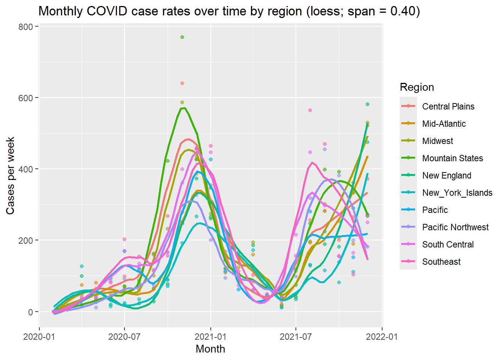
ggplot(covid_region_month, aes(x = month, y = cases, color = region_name)) +
geom_point(alpha = 0.6) +
stat_smooth(method = "loess", span = 0.60, se = FALSE) +
labs(
title = "Monthly COVID case rates over time by region (loess; span = 0.60)",
x = "Month",
y = "Cases per week",
color = "Region"
)`geom_smooth()` using formula = 'y ~ x'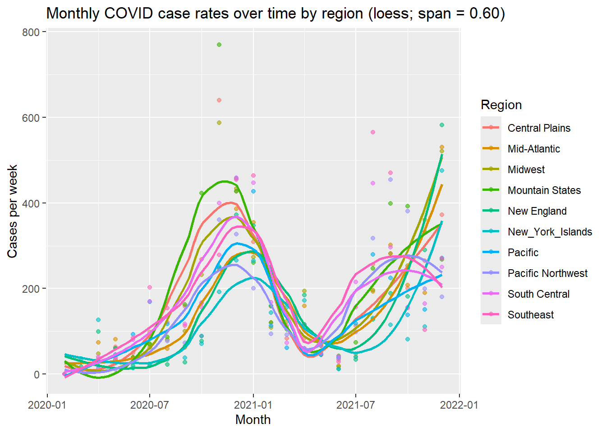
From comparing the three sets of trendlines above, when span = 0.25, the trendlines are nearly an exact fit to the data, but overfitting will prevent generalization to new data from being very effective. Conversely, when span = 0.60, the trendlines don’t capture the very high spikes in the relationship. Therefore, span = 0.40 is a good fit to the data without being too noisy.
5. Make barplots of states by population category colored by region
covid_means_plot <- covid_means %>%
mutate(
pop_cat = ifelse(pop_binary, "10M or more", "Under 10M"),
pop_cat = factor(pop_cat, levels = c("Under 10M", "10M or more"))
)
ggplot(covid_means_plot, aes(x = pop_cat, fill = region_name)) +
geom_bar(position = "dodge") +
scale_fill_brewer(palette = "Set3") +
labs(
title = "Number of States by Population Category and Region",
x = "Population category",
y = "Number of states",
fill = "Region"
) +
theme_minimal()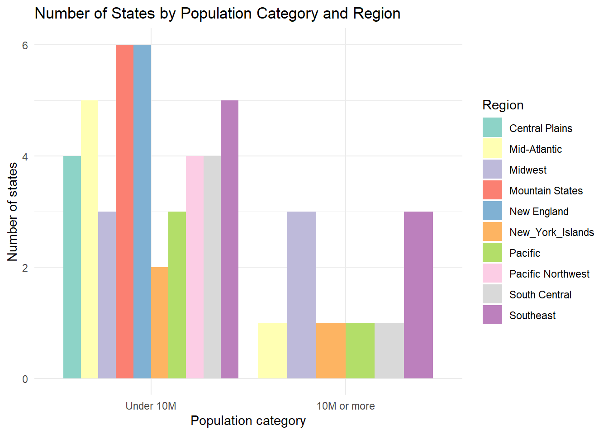
In this bar graph, we see that the regions with the most states under a population of 10 million are from the Mountain States and New England regions, with 6 states each, and no states with populations above 10 million. The regions that only have one state with a population above 10 million are the Mid-Atlantic, New York Islands, Pacific, and South Central regions. Meanwhile, both the Midwest and Southeast regions have 2 states with a population above 10 million, while the Southeast also has 5 states with a population below 10 million.
6. Use stat_summary to examine mean vaccination rate and death rate by region
covid_means# A tibble: 52 × 10
state state_name pop region_name cases hosp booster series deaths
<chr> <chr> <int> <fct> <dbl> <dbl> <dbl> <dbl> <dbl>
1 AK Alaska 7.32e5 Pacific No… 206. 7.10 1672. 20996. 1.21
2 AL Alabama 5.02e6 Southeast 173. 14.8 952. 14759. 3.12
3 AR Arkansas 3.01e6 South Cent… 183. 13.4 1186. 16491. 2.95
4 AZ Arizona 7.18e6 Pacific 187. 12.8 1388. 19637. 3.02
5 CA California 3.95e7 Pacific 136. 7.99 1553. 21732. 1.93
6 CO Colorado 5.78e6 Mountain S… 161. 9.87 1909. 21855. 1.85
7 CT Connecticut 3.60e6 New England 138. 8.07 1811. 24636. 2.47
8 DC District of Colum… 6.90e5 Mid-Atlant… 135. 11.3 1839. 26530. 2.09
9 DE Delaware 9.92e5 Mid-Atlant… 175. 10.3 1514. 20748. 2.06
10 FL Florida 2.16e7 Southeast 178. 14.8 1425. 20090. 2.71
# ℹ 42 more rows
# ℹ 1 more variable: pop_binary <lgl># Vaccination rate by region
ggplot(covid_means, aes(x = region_name, y = series, color = region_name)) +
stat_summary(fun.data = "mean_sdl") +
stat_summary(
fun.data = "mean_sdl",
geom = "errorbar",
width = 0.2
) +
labs(
title = "Mean vaccination rate by region (± 1 SD)",
x = "Region",
y = "Vaccinations per week",
color = "Region"
) +
theme_minimal() +
theme(legend.position = "none") +
theme(axis.text.x = element_text(angle = 45, hjust = 1))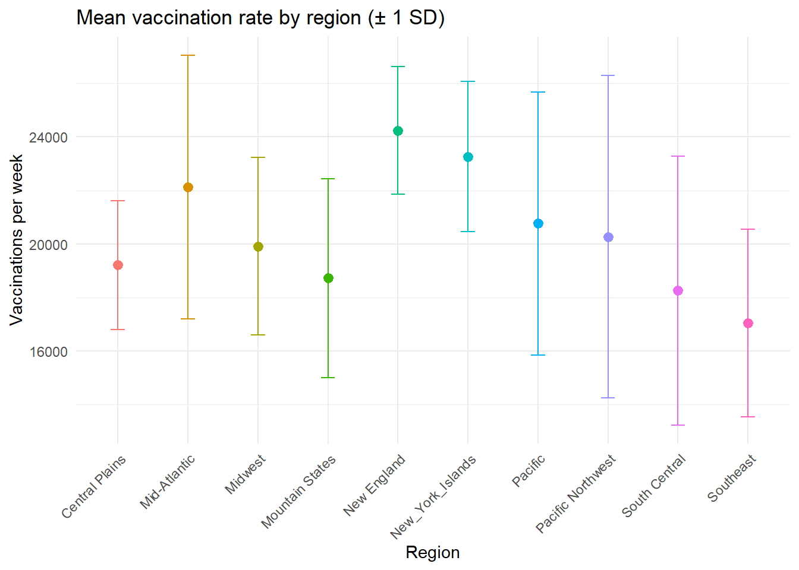
From this plot, we see that vaccination rates are the most varies in the Mid-Atlantic, Pacific, and Pacific Northwest regions, with the standard deviation range being the highest. We also see that New England has the most consistently high vaccination rate, with a mean of 24,000 vaccinations per week and a small standard deviation. The overall lowest vaccination rates are from the Southeast region, with a mean of roighly 17,000 and a standard deviation dropping all the way to less than 15,000 vaccinations per week.
# Death rate by region
ggplot(covid_means, aes(x = region_name, y = deaths, color = region_name)) +
stat_summary(fun.data = "mean_sdl") +
stat_summary(
fun.data = "mean_sdl",
geom = "errorbar",
width = 0.2
) +
labs(
title = "Mean death rate by region (± 1 SD)",
x = "Region",
y = "Deaths per week",
color = "Region"
) +
theme_minimal() +
theme(legend.position = "none") +
theme(axis.text.x = element_text(angle = 45, hjust = 1))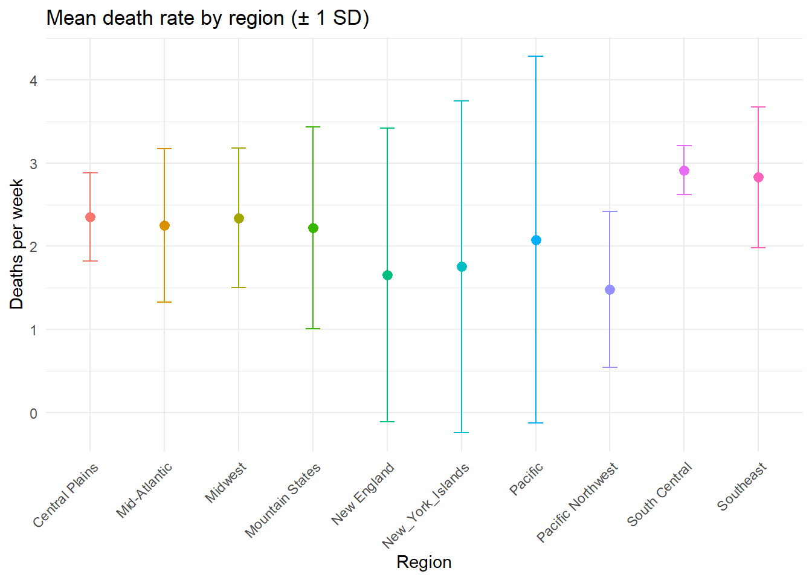
From this plot, we see that the mean death rate is fairly consistent across states, with most having a rate of 1.5 to 2.5 deaths per week. The New England, New York Islands, and Pacific regions have a standard deviation that varies wildly, from below 0 to above 3.5 deaths per week. The lowest mean death rate belongs to the Pacific Northwest with roughly 1.5 deaths per week, while the highest belongs to the South Central region with nearly 3 deaths per week and a small standard deviation.
7. Make a map showing the spatial trend in COVID deaths in the US
library(dplyr)
library(ggplot2)
library(maps)
library(stringr)
us_states <- map_data("state")
covid_map <- covid_means %>%
mutate(region = str_to_lower(state_name)) %>%
select(region, deaths)
us_states_covid <- us_states %>%
left_join(covid_map, by = "region")
# Find top 10 states by death_rate and compute label positions (simple centroid)
top10 <- us_states_covid %>%
filter(!is.na(deaths)) %>%
distinct(region, deaths) %>%
arrange(desc(deaths)) %>%
slice_head(n = 10)
centroids <- us_states_covid %>%
filter(region %in% top10$region) %>%
group_by(region) %>%
summarise(
long = mean(long, na.rm = TRUE),
lat = mean(lat, na.rm = TRUE),
.groups = "drop"
) %>%
left_join(top10, by = "region") %>%
mutate(label = "*")
# Plot (custom palette + correct legend label + top10 markers + fixed aspect ratio)
ggplot(us_states_covid, aes(x = long, y = lat, group = group, fill = deaths)) +
geom_polygon(color = "white", linewidth = 0.2) +
coord_fixed(1.3) +
scale_fill_gradientn(
colors = c("#f7fbff", "#c6dbef", "#6baed6", "#2171b5", "#08306b"),
name = "Deaths per week" # legend title
) +
geom_text(
data = centroids,
aes(x = long, y = lat, label = label),
inherit.aes = FALSE,
size = 5,
color = "black"
) +
labs(
title = "Spatial trend in COVID deaths (death rate) by state",
subtitle = "Top 10 states by death rate marked with *",
x = NULL,
y = NULL
) +
theme_minimal() +
theme(
axis.text = element_blank(),
axis.ticks = element_blank(),
panel.grid = element_blank()
)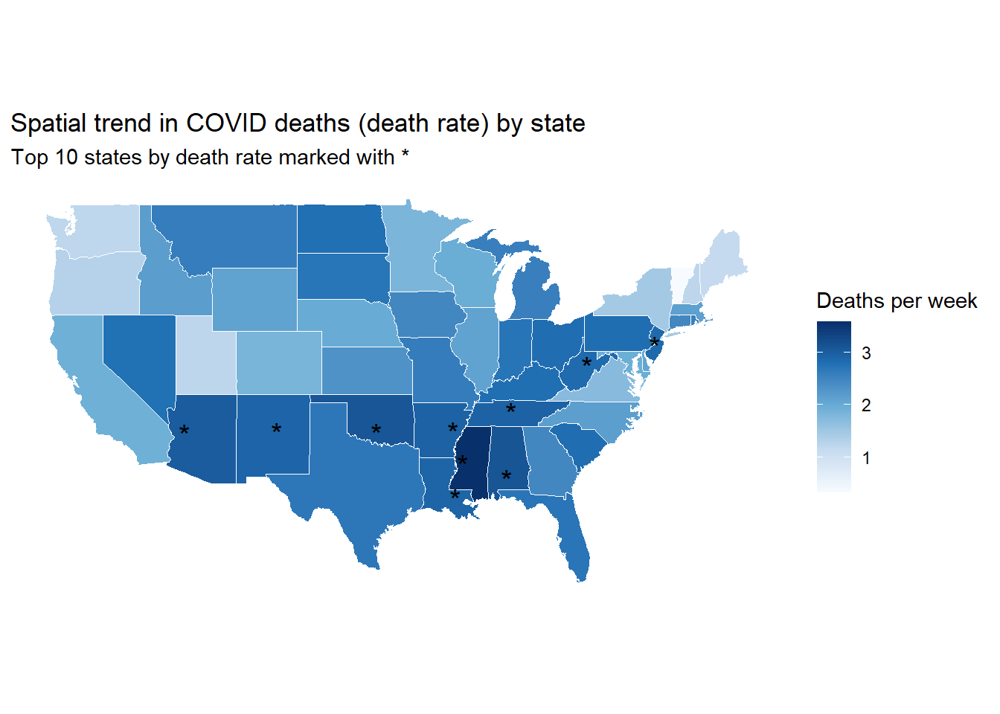
From this plot, we see a clear trend: The highest death rates (denoted by the darkest blue colors and many of the stars indicating the top 10 death rates by state) are clustered around the South and Southwest regions of the US, while the lower death rates (light blues) tend to appear more in the higher regions of the US. For example, the Upper Midwest, parts of the Mountain West, and much of New England / the far North have lighter shading than the South.
8. Use gganimate to plot monthly 2021 vaccination rates by region
library(dplyr)
library(lubridate)
library(ggplot2)
library(gganimate)
# 1) Create month, then average by month -> region_name -> state
covid_monthly_state <- covid %>%
mutate(month = floor_date(date, "month")) %>%
group_by(month, region_name, state_name) %>%
filter(date >= "2021-01-01") %>%
summarise(series_avg = mean(series, na.rm = TRUE), .groups = "drop")
# 2) Rainbow palette (one color per region)
regions <- sort(unique(covid_monthly_state$region_name))
rainbow_cols <- setNames(rainbow(length(regions)), regions)
# 3) Animated boxplot: one plot per month
p <- ggplot(covid_monthly_state,
aes(x = region_name, y = series_avg, fill = region_name)) +
geom_boxplot(outlier.alpha = 0.25) +
scale_fill_manual(values = rainbow_cols) +
labs(
title = "Monthly distribution of vaccination series by region",
subtitle = "Month: {format(frame_time, '%Y-%m')}",
x = "Region",
y = "Average cumulative vaccinated population (series)",
fill = "Region"
) +
theme_minimal() +
theme(
axis.text.x = element_text(angle = 30, hjust = 1),
legend.position = "none"
) +
transition_time(month) +
ease_aes("linear")
# 4) Render + save (GIF)
#anim <- animate(
# p,
# fps = 8,
# width = 900,
# height = 500,
# renderer = gifski_renderer()
#)
#anim_save("series_by_region_month.gif", anim)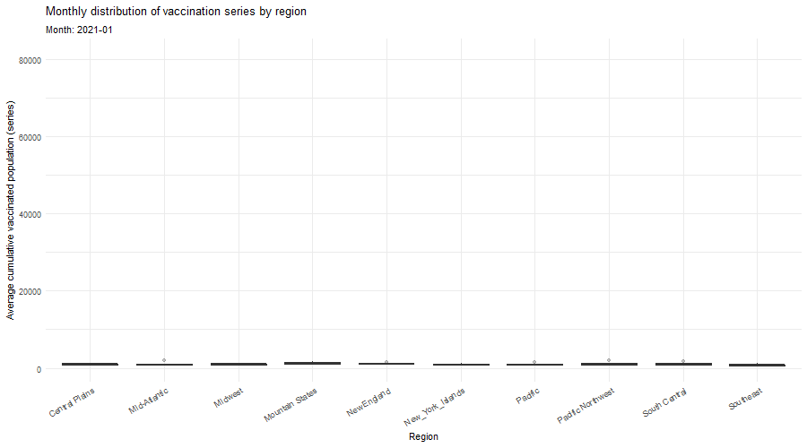
From this GIF, we see that the weekly vaccination rates increase steadily across the year of 2021, with the rate for the New England region tending to increase the quickest and the Southeast region tending to increase the slowest.